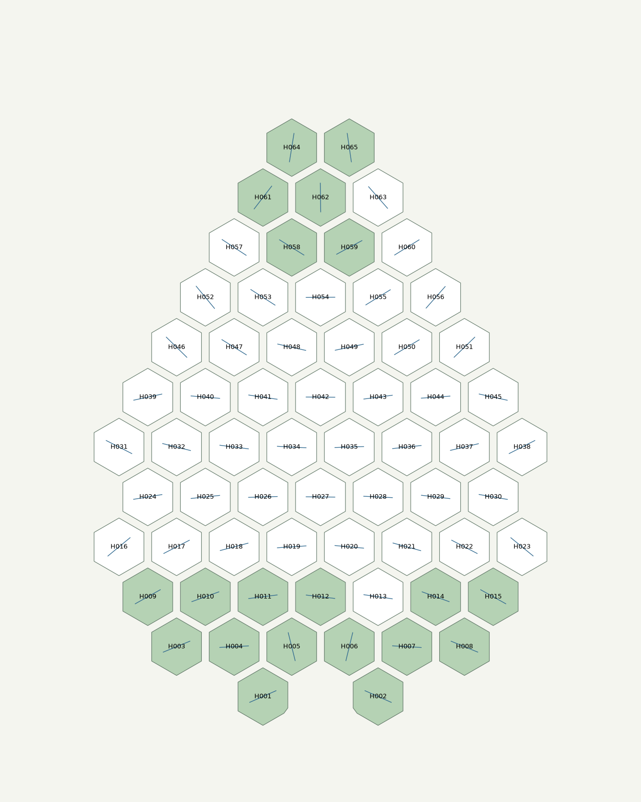
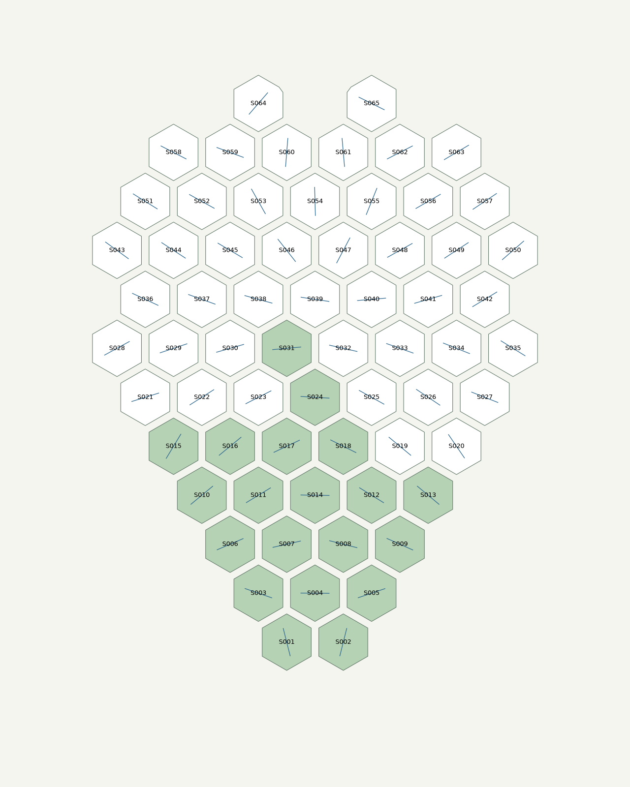

PREDICT → BUILD → TEST → MEASURE
Physical Validation Loop
UNCALIBRATED MODEL
NO PHYSICAL VALIDATION DATA YET
Carregando resultados reais…
Limites do modelo e leitura das medidas
Geometric draping, relative axial deformation, in-plane feed, ligament geometry, relative stiffness, boundary interaction proxy e large geometric displacement. Não é FEA completo.
Sem tensão calibrada do polímero, campo térmico, E(T), viscoelasticidade, creep, atrito, anisotropia entre camadas, deformação real de ruptura ou dano. F é um ajuste geométrico por célula. λ1/λ2 não são limites de falha. Mechanism classification is a design heuristic derived from geometric behavior.
Setas mostram a direção principal no estado plano. A orientação não é identificável quando λ1/λ2 ≤ 1,02; nesses casos a seta é omitida. Meça segmentos materiais alinhados a d1/d2 antes do ensaio e siga os mesmos pontos depois.
PHYSICAL VALIDATION
Da bancada para o modelo
Dados processados neste navegador, sem envio ao servidor. Exporte para guardar; nenhum resultado físico está incluído.
NO PHYSICAL VALIDATION DATA YET
Inserir uma célula manualmente
Measurement plan · 20 células por peça
Amostragem entre faixas de demanda, borda e interior. Grupos vazios não são preenchidos artificialmente. Azul: direção d1; d2 é perpendicular. Use os mesmos pontos materiais antes e depois.

HAB-2 SVG ↓{kind=link}

Sub-Merged SVG ↓{kind=link}
Test procedure · processo repetível
- Imprimir e registrar perfil, material e lote.
- Marcar células, fotografar peça plana com escala.
- Posicionar no molde, aquecer sob condição definida e medir temperatura superficial.
- Formar, manter, resfriar e registrar todos os tempos.
- Retirar, fotografar e medir os mesmos segmentos d1/d2.
- Registrar falhas e importar os dados.
Sensores · dados opcionais
time_s, displacement_mm, force_n, temperature_c. Não há integração com hardware.
CALIBRATION ≠ VALIDATION
Congelar antes de prever
Original para calibração; amostra Candidate separada para validação cega. O solver permanece offline. Nenhuma calibração foi feita nesta versão.
UNCALIBRATED MODEL
Executar o ajuste offline
Depois de exportar o trabalho:
python analysis/calibrate_physical.py calibration_job.json
Busca limitada em boundary stiffness, bending penalty e feed penalty. Axial scale fixo para evitar ambiguidade de escala. Objetivo de ranking; a validação nunca seleciona parâmetros. Convergência e versão do solver ficam no relatório.
CURRENT TEST PLAN
Experiment V1 — Mechanism Screening
Sub-Merged: quatro peças para distinguir reserva de material, alimentação pelo aro e interação. Os resultados do solver não escolhem um design final.
Download physical test pack ↓Lamp configuration
Escolhas independentes por peça; recomendações numéricas provisórias. Uma configuração combinada ainda precisa de validação física.
Pacote de candidato v0.5 preservado ↓